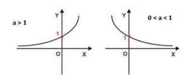
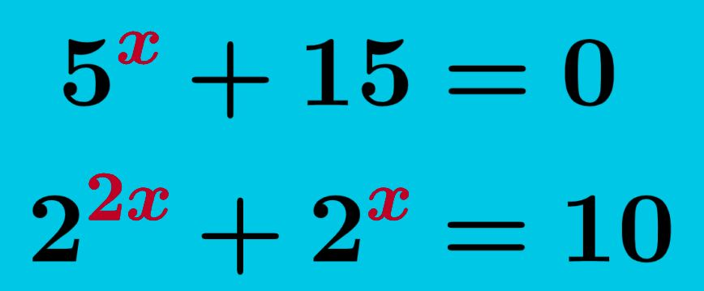

Função exponencial é uma função onde a incógnita, o X, fica no expoente, f(x) = a^x, sua base deve ser maior que 0 e diferente de 1, pois 0 elevado a qualquer número é 0. E 1 elevado a qualquer número é 1.
Essa função representa um crescimento ou decrescimento. É usada para entender o contágio de uma doença, o crescimento populacional, os juros compostos, que é muito utilizado na matemática financeira, entre outros usos que pode ter.
Para construir o gráfico das funções exponenciais, Primeiramente vamos analisar o A, se for maior que 1 é uma função crescente, se 0 é menor A, e A é menor que 1, então será uma função decrescente. Para construir a curva, iremos atribuir valores a X, geralmente usamos: -2, -1, 0, 1 e 2, mas se não for suficiente podemos aumentar.
É uma equação onde a incógnita, o X, fica no expoente. Para descobrir a incógnita é igual, a única diferença é que teremos uma equação junto.
Voltar